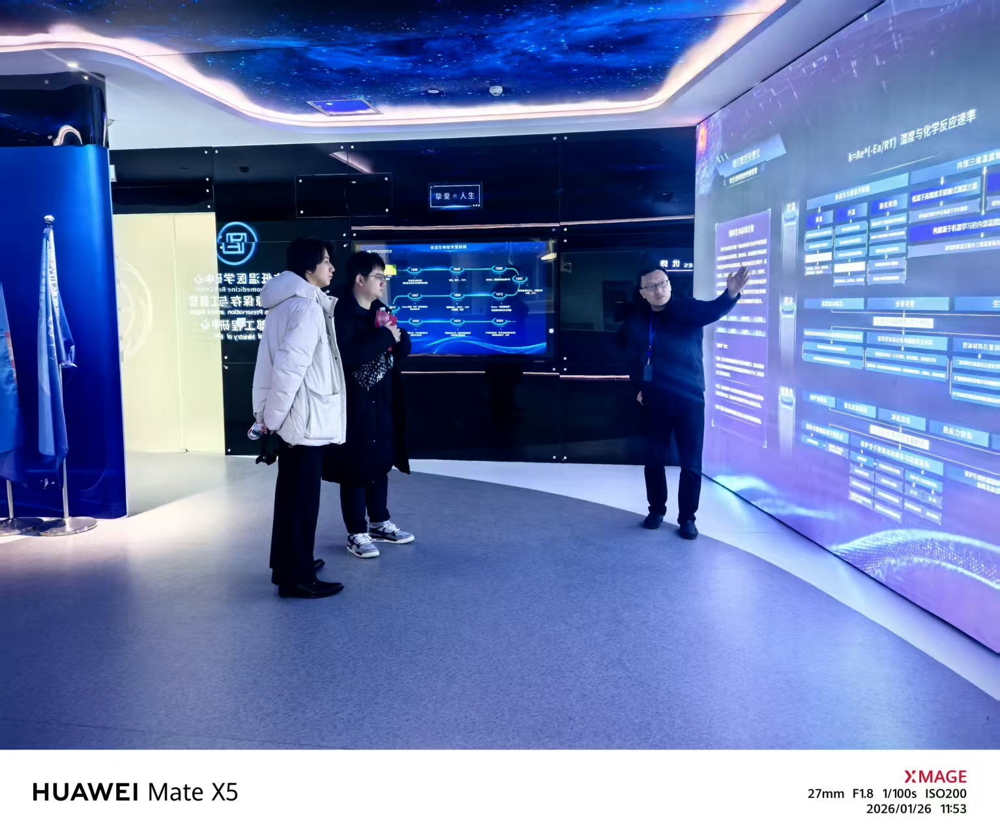

AL
Alcor Life Extension Foundation
Arizona-based cryonics organization focused on whole-body and neuro cryopreservation.
A long-running public cryonics reference point for patient-care framing, protocols, and long-term storage.An undergraduate student from Wuhan University, majoring in Biology. I used to work in WHU-iGEM. I am currently working in Prof. Yanxun Yu's lab, and I am also a visiting undergraduate researcher in the Clemens Scherzer Lab at Yale University. I plan to pursue a PhD in the future.
My previous research involves C. elegans
neuroscience, synthetic biology, Parkinson's disease, and biochemistry.
My future research interests include, but are not limited to, neuroscience. More specifically, I am interested in higher-order neurocognitive functions such as learning, memory, and consciousness,
as well as cutting-edge directions such as artificial induction of torpor/hibernation.
A working roadmap for reading how natural torpor is understood, how its mechanisms are maintained, and how artificial neural induction may produce protective physiological states. Hover over each coordinate for notes; click a publication node to open its PubMed page.
This route is not the same as neural torpor: it focuses on ultra-low-temperature preservation after legal death or in organ-level cryobiology. Hover over each institute card for context; press My Visit on Yinfeng to show my notes and photo.
Arizona-based cryonics organization focused on whole-body and neuro cryopreservation.
A long-running public cryonics reference point for patient-care framing, protocols, and long-term storage.Michigan-based organization offering cryonic suspension and long-term patient storage.
A major nonprofit comparison case for lower-cost cryonics models and member-centered operations.European cryonics provider emphasizing standby, stabilization, and transport logistics.
Highlights the practical chain between death declaration, rapid response, perfusion, cooling, and storage.Chinese institute working on low-temperature preservation, organ cryobiology, and body donation-linked research.
Press My Visit to see my field note from the institute visit and the photo I took there.
During my visit, the director of the institute described their work on cryopreservation and rewarming of rabbit hearts, including experiments in which a small proportion (200/3000) of cryopreserved hearts recovered beating activity after rewarming.
These efforts convinced me that cryobiology has enormous potential for preserving organs and tissues. Even relatively simple organisms such as Caenorhabditis elegans, which I currently use in my research, can survive long-term cryopreservation under appropriate conditions.
However, I remain concerned that translating ultra-low-temperature preservation to an intact human body would be extraordinarily difficult. In a highly complex organism, even a small amount of irreversible damage may be unacceptable. For this reason, I increasingly feel that the neural and physiological approach pursued by researchers in torpor and hibernation may offer a more biologically integrated path toward reversible human hypometabolism.
I also learned that 34 remarkable volunteers from different walks of life had already been cryopreserved in tanks. Their participation was framed more like body donation: puncture sampling at different time points can help researchers study how cryopreservation affects the human body.
A working roadmap for reading how natural torpor is understood, how its mechanisms are maintained, and how artificial neural induction may produce protective physiological states. Hover over each coordinate for notes; click a publication node to open its PubMed page.
Reserved for the next layer of the map: molecular protection, metabolic remodeling, organ-specific outcomes, and possible translational constraints.
This panel will map higher-order neurocognitive functions such as learning, memory, decision-making, and consciousness across mechanisms, circuits, and computational frameworks.
Hongyi Honor Class
The Hongyi Honor Class is one of the most selective programs at Wuhan University, admitting students with top entrance scores.
It provides interdisciplinary training for innovative and high-achieving students, and all major courses are taught in English.
, College of Life Sciences
ShanghaiRanking China #8 · U.S. News Global #85
Visiting Undergraduate Researcher, Scherzer Lab, Adams Center for Parkinson’s Disease Research
National College Entrance Examination (Gaokao), Biology: 100/100
TOEFL: 106
Wang, Y.*, Zhang, J., Huang, X., & Yu, Y. Distributed INS-1 signaling through the candidate noncanonical receptor NTR-1 tunes the ASER-AIY axis to drive high-salt ethanol avoidance in Caenorhabditis elegans. Neuroscience 2026, Society for Neuroscience.
Neuropeptides are small signaling molecules secreted by neurons in C. elegans. With its simple nervous system and fully mapped connectome, C. elegans is an ideal model to study how neuropeptides regulate neural circuits. Among them, the insulin-like peptide (ILP) family is evolutionarily conserved and of particular interest.
Previous studies have shown that insulin-like peptide-1 (INS-1) is involved in integrating environmental cues to regulate behavior. In our preliminary work, we found that while wild-type worms avoid ethanol under high-salt conditions, ins-1 mutants instead show strong attraction. This leads to our key question: how does INS-1 modulate neural circuits to reverse chemotactic behavior?
We plan to combine neuron-specific knockout and rescue of ins-1 with behavioral assays to identify key neurons, and further use calcium imaging, optogenetics, and visualization of INS-1 release to study its mechanism.
Using a strain with loxP sites flanking ins-1 and Cre-mediated recombination, I constructed neuron-specific knockouts in ASEL, AIY, and muscle. Knockout in ASEL and muscle both reduced ethanol preference, but did not fully restore wild-type avoidance, possibly due to residual INS-1 from other sources.
I then constructed neuron-specific rescue of ins-1 in the mutant background (ASEL, ASER, AWC, AIZ, etc.). Rescue in ASEL and AIZ significantly restored ethanol avoidance, helping us identify key neurons.
Calcium imaging shows that ins-1 mutation does not significantly affect ASER (Core Salt Sensor) activity. Under high salt, ASEL shows strong activation upon ethanol removal, suggesting its role in this behavior. Optogenetic inhibition of ASEL in wild-type worms reduces ethanol avoidance, consistent with the ASEL-specific knockout, suggesting INS-1 may mediate signaling from ASEL to downstream neurons.
In the future, based on the status of ASEL–AIY–AIZ circuit in the connectome, we will further conduct behavioral test on AIY-related strains and perform calcium imaging on key neurons in the ins-1 mutant background. We have also fused INS-1 with a fluorescent tag and expect to visualize its stimulus-dependent release in key neurons using confocal imaging.
This is the first project I have carried out independently, from plasmid design and microinjection to behavioral assays and optogenetic experiments. I also discussed with my supervisor to refine the research direction along the way.
Through this project, I learned not only the full workflow of C. elegans experiments, but also how to design experiments and improve them based on results. For example, when using blue light to activate ACR2, I encountered overheating that killed the worms. I solved this by using a simple timer socket to intermittently power the light source. The behavioral assays also made me realize the importance of careful control, as factors like humidity and temperature can affect ethanol evaporation and lead to variability in results.
Identifying target proteins of small-molecule drugs is important for understanding their mechanisms, discovering new targets, and guiding drug optimization. Proximity labeling methods link the drug to an enzyme as a bait to label nearby proteins. Existing methods such as APEX2 and TurboID have their limitations.
Our lab previously developed POST-IT (Pup-On-target for Small molecule Target Identification Technology), based on a prokaryotic ubiquitin-like system. In this system, the small molecule is linked via HaloTag, and the enzyme PafA attaches a small protein (SBP–Pup) to nearby proteins. It can be used in living cells under mild conditions, is highly orthogonal to eukaryotic systems, and shows low diffusion. However, it still has some limitations, such as relatively slow labeling in cells and high substrate demand.
To address these limitations, we focused on the PafA enzyme and used yeast surface display combined with error-prone PCR to build a mutant library. Through directed evolution, we aimed to obtain PafA variants that require less time and lower substrate concentration to reach effective labeling.
We expressed and purified PafA, and SBP–Pup as the enzyme and the substrate for in vivo and in vitro reactions. Based on error-prone PCR, we constructed a PafA mutant library with a size of ~106. Using flow cytometry sorting, we performed nine rounds of directed evolution with gradually reduced labeling time, and successfully obtained the R9 library with significantly improved catalytic efficiency.
We then applied NGS to sequence the enriched PafA genes. From the results, we identified 9 meaningful mutation sites. By combining these sites, we constructed five multi-mutant PafA variants. Both flow cytometry and confocal imaging showed that the 9mt-L1 variant, containing all nine mutations, had the highest catalytic efficiency. We further performed evolution under lower substrate conditions, optimizing the reaction from 18 h, 40 μM to 2 h, 10 μM.
We also used structural tools such as AlphaFold3 to analyze how these mutations affect the homodimer interface, ATP-binding site, and catalytic regions, which may support future rational design.
In the future, we plan to further improve PafA efficiency and move toward applications. We will first test POST-IT using dasatinib, and then apply it to Hino, a Parkinson’s disease-related compound studied by our lab, whose mechanism is still unclear. By synthesizing a Hino-linker–chloroalkane and integrating it into POST-IT via click chemistry, we aim to identify its target proteins.
This project was initially guided by a senior student together with another undergraduate labmate and me. Since last summer, we two undergraduates have been working on it independently. We made equal contributions in many experiments. I did experiments like constructing mutant PafA plasmids, preparing competent yeast, protein purification, in vitro assays (validated by SDS–PAGE), in vivo labeling and flow cytometry analysis, as well as basic structural analysis.
What impressed me most during this project was actually “failure.” When we first took over, our priority was to prepare enough protein. While PafA purification went smoothly, the small protein SBP–Pup failed to be expressed at a usable level after five attempts. We tried different columns, IPTG gradient induction, and Western blot to troubleshoot. In the end, we switched to ArcticExpress cells carrying cold-shock chaperones and successfully expressed Pup at low temperature. We think the issue was due to its small size, as high expression may lead to inclusion body formation. This experience gave me a much deeper understanding of how to debug experiments in practice.
Bio-computing is a promising field with potential applications in bio-security, environmental monitoring, and personalized medicine. However, there has always been a significant gap between successfully constructing logic gates and actually achieving computation. Previous designs were always limited to within a single cell, constrained by available orthogonal components and cellular metabolic pressures, making it difficult to construct complex adders.
Fedorec, A. J. H. et al. developed a new method to build logic gates at the colony level. Using simple gene circuits such as high-pass and band-pass filters, along with spatial diffusion of inducers on solid media, colonies can generate outputs of classical logic gates like AND, OR, and XOR. This approach not only uses simple circuits but also allows easy tuning of logic functions by adjusting physical parameters.
Building on this, we creatively developed a toolkit for constructing logic gates by combining orthogonal quorum sensing and light-controlled degradation. Using this toolkit, we built a reproducible binary adder, showcasing the most intuitive aspect of biological computation.
We constructed fluorescent reporters from six different quorum-sensing systems and tested their orthogonality, obtaining two sets of three orthogonal systems each to support inputs, outputs, and carry signals for the adder.
For each quorum-sensing system, we measured the diffusion–response curves on solid media and built high-pass and band-pass circuits, allowing engineered cells to perform basic logic gates like AND, OR, and XOR. We further designed and implemented cascaded logic gate experiments to simulate multi-input logic, serial calculation and addition computation.
To enable repeated operation, we inserted light-sensitive domains into the AHL-degrading enzyme AiiA for light-controlled degradation and developed light-inducible fluorescent proteins. This involved functional validation of the enzyme, molecular dynamics simulations of AiiA, and functional validation of the protein degradation tag.
For accurate and automated quantification of fluorescent colonies, we developed a colony quantification program. We also modeled wet-lab data for different quorum-sensing systems, creating simulation software to predict system responses to AHLs, and an educational platform to simulate colonies forming an adder.
The resulting tools, including orthogonal AHL biosensors and diffusion–response mapping, logic gate modules, light-induced degradation, modeling methods for spatial computation, visualization and debugging software, and hardware for easier colony localization, were integrated into the LOGIC toolbox to provide a foundation for future contributions to the iGEM community.
During the project proposal phase, I independently proposed the LOGIC design concept, which uses multiple quorum-sensing systems and spatial diffusion to implement logic inputs and addition computation. I also drew the early modular blueprint for the project.
In the lab, I was a core wet-lab member involved in establishing the technical approach, designing experiments, developing tools, and visualizing results. My specific contributions include screening orthogonal systems, validating logic gates, implementing multi-input and cascaded logic gates, quantifying and visualizing all logic-related data, and integrating the LOGIC toolbox.
During project selection, both LOGIC and CLEANSE, which I designed, were chosen from over 20 proposals to enter the final four. In LOGIC, I applied interdisciplinary thinking, combining the orthogonality concept and quorum-sensing systems I had just learned in microbiology to build spatial diffusion logic gates, using bacterial communication as “wires,” and applied programming knowledge to design colonies performing binary computation.
For LOGIC experimental results, we needed to quantify fluorescence for different colonies (logic gates) under varying inducer concentrations, distances, and durations. To handle this large dataset, I learned ImageJ macros and developed batch-processing scripts to quickly and accurately identify, select, and quantify colonies, allowing us to process over 6,000 colonies and more than 20,000 quantifications.
Participated in a summer training program spanning multiple frontiers of neuroscience and cognitive science. Through lectures ranging from brain tumor metabolomics to brain-computer interfaces, from social behavior to time perception, and from octopus suckers to the spatiotemporal plasticity of cognitive maps, I gained a deeper appreciation of both the frontier progress and the interdisciplinary appeal of neuroscience.
Participated in an international summer program featuring lectures, academic exchanges, and discussions The face-to-face interactions with Prof. Shi Yigong, Prof. Don Cleveland, Prof. Tak Wah Mak, etc., enabled me to gain an understanding of the cutting-edge topics in life sciences.
Selected as one of two delegates from Wuhan University to participate in this national forum. The event gathered outstanding students and educators from leading universities in China to discuss frontier issues in biology education, interdisciplinary training, and the future development of top-tier talent programs.
Completed an internship focused on the integration of artificial intelligence and biological research. This experience has enabled me to understand the extensive potential of the interdisciplinary combination of AI and biology.
Microbial and model organism handling: E. coli, yeast, and C. elegans.
Experimental skills: Molecular cloning, protein expression and purification, Western blot, FACS, and routine biochemical assays; mammalian cell culture; microinjection, calcium imaging, optogenetic manipulation, and behavioral assays in C. elegans.
Computer skills: C, HTML, CSS; basic structural biology tools (AlphaFold and PyMOL); Familiar with basic single-cell RNA-seq data analysis workflows in R; data analysis and data visualization.
If you would like to get in touch with me,
be it for exploring a technology,
a position,
or just to say hi,
feel free to send me an email at
or
You can also call me at
+86 15611527502

Moment · Certificate of Charitable Support 1st Anniversary Presented by UNICEF 😊.

Moment · Beyond the lab, I am a photographer who captures landscapes.

Moment · I'm also trying to paint with microorganisms, using the petri dish as my canvas.

Moment · Representation of the team at the iGEM competition in Paris, France.

Moment · Beyond the lab, I'm a filmmaker.